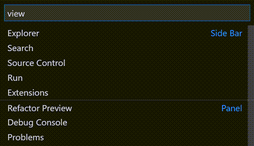

Activity Bar

On the left hand side of your editor is a section called the activity bar.
This bar holds the following tabs:
* Explorer: this tab reveals or hides the menu that has the files and folder available to you. You can add a new file, open an existing folder and navigate between different files.
* Search: helps you search and open files, it also helps to search and replace
* Source control: tracks the changes / amendments you make in your files. It will also show you whether your changes are tracked by Github.
*Run / Run and debug: "Run" is used to validate the normal behavior of the software, while "debugging" is used to identify and fix abnormal
behavior or errors.
"Run" is typically used during development for functional testing, while "debugging" is used to diagnose and fix issues that occur during the "run" process.
source:
Difference between run and debug
* Extensions: a list of tools to assist you with your coded
Editor Group
* This bar is on the top of your screen. This pane helps you customise your screen to your liking. for example rearranging the different bars, aligning the panel (where your code is) and the different layouts.
Side bar
* One the bottom left - this provides you with information like what branch you on, if your code has an issue, etc
Status bar
* On the bottom right - This bar shows you the number of line and the number of characters on a line, the indention and the language (eg HTML, Python, etc)
Panel
* This is an addtional view at the bottom. To bring up the panel:
Go to the Editor Group (The top bar) > click on view > choose the view you want, example terminal